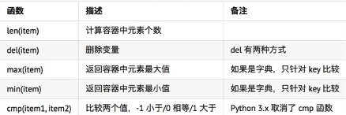
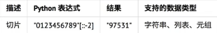
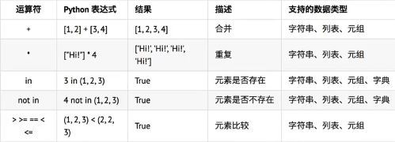
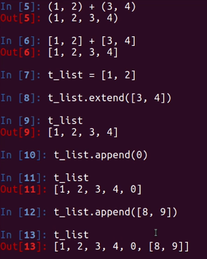

注：比较两个值，使用 <、 >、 ==

注：字典是一个无序集合，不能切片

字典中的in 、not in 对字段操作时，只能判断字典的key
注：+ 、extend()、append()比较

定义
for 变量 in 集合： 循环体代码 else: 没有通过break退出循环，循环结束后，会执行的代码
for 变量 in 集合：
循环体代码
else:
没有通过break退出循环，循环结束后，会执行的代码